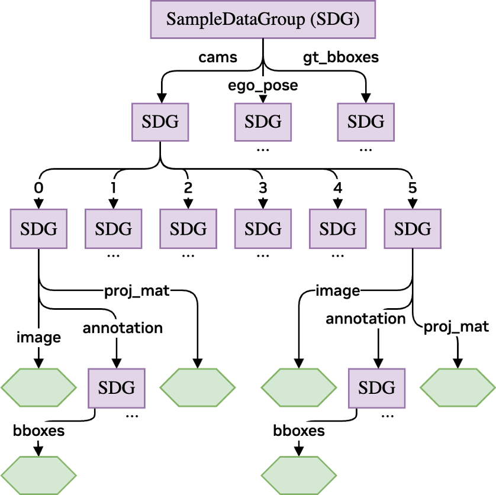

Data Format: Sample Data Group
Motivation & Overview
Throughout the pipeline, an internal data format, SampleDataGroup,
is used to organize the training data. In the AUTO use-case, the training samples are often most naturally
described using a hierarchy. For example:
The training sample contains 6 cameras, where the data for each camera includes an image,
a projection matrix, as well as image annotations, where the image annotations
are composed of object bounding boxes... Apart from the camera data, there is also an ego-pose of the
vehicle, as well as annotations containing (3D) bounding boxes...
A common choice is nested dictionaries, which fit the hierarchy well. Our
SampleDataGroup plays a similar role but adds strict format handling
and utilities that support DALI pipeline construction. Its design serves the following goals:
Well-defined data format: Each instance has a predefined format (what data exists, how it is organized, and what are the data types). The format can be changed, but only explicitly. Instances can also be “blueprints” (format only) used to infer a step’s output format from its input, track available data, detect incompatible steps, and provide convenient conversion to/from the format required by the underlying DALI pipeline at certain steps (data input & output). All these use-cases are supported before actual pipeline execution, when no data is yet available (e.g. useful when creating iterators, e.g. a
DALIGenericIterator, or aDALIStructuredOutputIterator).Flexible processing steps: Steps are implemented so that, for example, an image decoding step can automatically find and process all images without manually specifying their exact locations in the data. This discovery happens during DALI graph construction, so there is no runtime cost during pipeline execution.
SampleDataGroupprovides reusable utilities (e.g.,find_all_occurrences()), which can be directly used when implementing new flexible pipeline steps following that design.Support of structured data accross pipeline borders: The data format can be used to pass hierarchical data across pipeline borders, i.e. when inputting the data into the pipeline and when outputting the data from the pipeline. Note that nested dictionaries cannot be easily used for this purpose, as the inputs/outputs to/from the underlying DALI pipeline are expected to be flat tuples of individual data fields. The
SampleDataGroupprovides utilities to handle conversions between the hierarchical and flat data formats in a way that is transparent to the user of the pipeline (see related methods, e.g.,get_data(),set_data(),field_names_flat(),field_types_flat(), …).
{kind=link}

Example of a data format definition as a SampleDataGroup
object.
This example corresponds to the text example given at the beginning of this section.
Green hexagons represent fields containing actual data (so called data fields; see Field Types).
Purple rectangles represent SampleDataGroup objects (so
called data group fields; see Field Types).
Important
- Please note that:
It is configurable whether type checking should be performed at assignment time. By default, it is enabled.
To disable type checking, use
set_do_check_type().For the pipeline, there is a corresponding option in the
PipelineDefinitionconstructor, which controls whether data format/type checking is enabled inside the DALI pipeline. By default, it is enabled.Type checking is useful when developing the pipeline/processing step, but adds some overhead. Therefore, it is advisable to disable it in production.
Field Types
A
SampleDataGroupcontains different types of fields:Data fields: Store actual data. Each field has a predefined type (changeable only explicitly). The fields may either be of the
DataNodetype (inside the DALI pipeline), or of a type supported as input/output of the pipeline (e.g.numpy.ndarray,torch.Tensor, etc.). For the special case ofstringdata, see Special Case: Strings.Data group fields: Data group fields are intermediate hierarchy levels in the data format, and themselves contain multiple fields. The data group fields are themselves
SampleDataGroupobjects.Array fields: A special case of data group fields whose children have integer names covering a continuous range starting at 0. Any data group field meeting these conditions is treated as an array field (check with
is_array()). An array field is regarded as a more specific subtype if additional conditions are fulfilled:Data field array: All children are data fields (check with
is_data_field_array()).Data group field array: All children are data group fields (check with
is_data_group_field_array()).
Note: Although array fields are just data group fields meeting these constraints, the distinction is useful.
SampleDataGroupprovides helpers to define data field arrays and data group field arrays in a concise way. Also, checks if a field is an array field are useful for validation and error checking.
Special Case: Strings
DALI does not directly support string data inside the pipeline.
Typically, strings are used in two ways during pre-processing:
As labels (e.g. class/category), which are converted to numeric values before training
Passed through the pre-processing and used later as strings (e.g. sequence identifiers)
The
SampleDataGroupsupports both use-cases by (respectively):
User-defined mappings that automatically convert strings to numbers on assignment for selected fields. The mapping is defined in
add_data_field()(with the type set to the type after mapping is applied).Transparently auto-converting strings to an internal format (
uint8sequences) for transport through the pipeline, and converting back to strings on output. This is done by setting the type tonvidia.dali.types.DALIDataType.STRINGinadd_data_field().